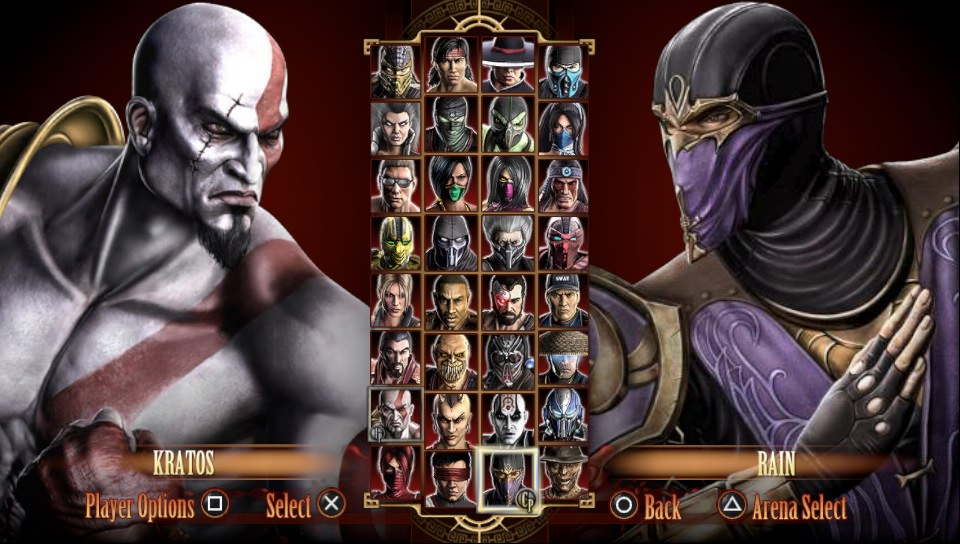

Mortal Kombat é uma série de jogos desenvolvido em 1992. A série é conhecida pelos altos níveis de violência sangrenta, incluindo mais notavelmente, as Fatalidades (movimentos finalizadores, que requerem uma sequência de botões e movimentos para serem executadas). O primeiro jogo da série foi lançado em Agosto de 1992 para as maquinas de Arcade, sendo mais tarde convertido para mais de dez consoles caseiros. Em 1993 foi lançada sua sequência, Mortal Kombat II, com gráficos melhorados e um elenco maior. Em 1995 foi lançado Mortal Kombat 3, sendo seguidos por duas expansões, Ultimate Mortal Kombat 3, que aumentou o número de personagens e houve aperfeiçoamentos na jogabilidade, e Mortal Kombat: Trilogy,que juntou todos os personagens da série até o momento.

Os três jogos originais e as suas atualizações, Mortal Kombat, Mortal Kombat II, Mortal Kombat 3, Ultimate Mortal Kombat 3 e Mortal Kombat Trilogy, têm um estilo de combate em 2D. os primeiros dois foram jogados nas máquinas arcade com um joystick e cinco botões: soco forte, soco leve, chute forte, chute leve e bloquear/defender. Mortal Kombat 3 e as suas atualizações acrescentou um novo botão, "correr".[5] Os personagens nos primeiros jogos Mortal Kombat jogam de uma maneira virtualmente idêntica de uns para os outros, com a única diferença a ser os movimentos especiais.[6] Através da década de 1990, a Midway Games manteve o mesmo estilo com quatro botões de ataque para as diferentes ordens de socos, chutes e bloqueios. Mortal Kombat: Deadly Alliance mudou o estilo, ao diferenciar os movimentos de cada personagem e a dar-lhes múltiplos estilos de luta. Começando em Deadly Alliance até Mortal Kombat: Deception, cada um dos personagens possuem três estilos de luta: dois sem arma e um armado.[7] As poucas exceções surgiram em Mortal Kombat: Armageddon, como nos personagens chefes de aspecto monstro como Moloch e Onaga, que apenas têm um estilo.[8] Enquanto que a maior parte dos estilos usados na série são baseado em artes marciais reais, alguns são fictícios.[9] Por exemplo, os estilos de Goro, foram desenhados para tirarem vantagem do facto dele ter quatro braços. Em Armageddon, os estilos foram reduzidos para o máximo de dois por personagem (geralmente um com arma e outro sem arma), devido ao número acrescido de personagens jogáveis.[8] Mortal Kombat vs. DC Universe baixou a tendência dos múltiplos estilos em favor da dar a cada personagem mais movimentos especiais,[10] mas alguns deles ainda têm vários estilos de luta.[11] Em Mortal Kombat (2011) regressou o plano de luta em 2D, apesar dos personagens terem sido moldados em 3D; ao contrário dos antecessores MK, cada um dos quatro botões no comando representa um ataque de um membro correspondente.
Mortal Kombat foi um dos primeiros títulos do gênero de jogos de luta que incluiu personagens secretos, jogos secretos e outros Easter Eggs. A maioria desses segredos eram apenas acessíveis através de algo muito desafiador exigente. Foi essa ideia que ajudou Mortal Kombat a se tornar um dos mais memoráveis do gênero. Sem dúvida, grande parte da fama da série veio a tona com o uso de finalizações, movimentos especiais que podem ser usados somente no final de uma luta, usando uma certa sequência de botões para ser realizada quando o oponente está tonto. A finalização mais conhecida é a Fatality, que é a mais violenta das finalizações, onde o oponente é morto, podendo ocorrer desmembramentos, empalação, decapitação, entre outras variações, sempre envolvendo sangue e sofrimento.